A hipótese da
contração gravitacional contínua como fundamento da Decreasing
Universe Theory: redshift,
tempo cosmológico, curvas de rotação e testes observacionais
Resumo
Este artigo apresenta uma formulação sintética da Decreasing Universe Theory — DUT — com base nas proposições, equações, dados e testes observacionais contidos nos documentos analisados. A hipótese central da teoria é que o campo gravitacional provoca uma contração contínua do espaço e de todos os objetos nele contidos, inclusive instrumentos de medida. Essa contração seria extremamente lenta em escalas humanas, mas cumulativa em escalas cosmológicas, podendo produzir efeitos observacionais normalmente interpretados como expansão acelerada do universo, energia escura, matéria escura, redshift cosmológico e dilatação temporal. A partir dessa hipótese, os documentos derivam relações entre distância aparente, distância comóvel e redshift; propõem uma explicação para a dilatação temporal observada em supernovas Tipo Ia; formulam uma alternativa para curvas de rotação galáctica; derivam a relação Tully-Fisher; e propõem testes observacionais envolvendo massa galáctica, idade morfológica e redshift. Os resultados apresentados nos anexos indicam que, em alguns conjuntos de dados, galáxias mais massivas ou mais antigas tenderiam a apresentar menor redshift em condições comparáveis. Contudo, os próprios documentos também indicam limitações relevantes: tamanho amostral reduzido, dependência de massas estelares como aproximação da massa total, efeitos de projeção, velocidades peculiares e necessidade de maior formalização matemática. Conclui-se que a DUT, nos termos aqui analisados, constitui um programa teórico alternativo, internamente coerente em sua ambição unificadora, mas ainda dependente de validação empírica independente e de comparação quantitativa rigorosa com modelos cosmológicos concorrentes.
Palavras-chave: Decreasing Universe Theory; redshift; contração gravitacional; energia escura; matéria escura; Tully-Fisher; supernovas Tipo Ia; cosmologia alternativa.
1. Introdução
A Decreasing Universe Theory — DUT — parte de uma proposição física simples: campos gravitacionais não apenas curvariam ou afetariam o espaço, mas provocariam uma contração contínua do espaço e de tudo aquilo que se encontra em seu interior. Nos documentos analisados, essa contração inclui objetos materiais, padrões atômicos e instrumentos de medida. Assim, um observador situado dentro de um campo gravitacional não perceberia localmente sua própria contração, pois suas réguas, relógios e padrões físicos contrair-se-iam juntamente com ele. A diferença tornar-se-ia observável apenas em comparações cosmológicas entre regiões submetidas a histórias gravitacionais distintas.
Nos anexos, a DUT é apresentada como alternativa interpretativa para fenômenos que, no modelo cosmológico padrão, são usualmente explicados por expansão cósmica, energia escura, matéria escura, velocidades peculiares ou efeitos relativísticos. A teoria propõe que a aparente recessão acelerada das galáxias poderia resultar da contração progressiva dos padrões locais de distância. Se os instrumentos terrestres se tornam gradualmente menores, distâncias extragalácticas seriam medidas como progressivamente maiores, produzindo a impressão de afastamento acelerado.
A mesma hipótese é estendida ao redshift. Quanto maior o tempo de viagem de um fóton até a Terra, maior teria sido o período durante o qual o observador e seus instrumentos continuaram a contrair-se; por isso, o comprimento de onda recebido seria medido como relativamente maior. O redshift, portanto, não dependeria apenas da distância, mas também da massa da galáxia emissora, da idade da galáxia e da dinâmica peculiar do sistema observado.
Este artigo organiza as proposições dos documentos anexados em formato científico, com ênfase em quatro elementos: hipótese, metodologia, modelo teórico-cálculo e conclusão. O objetivo não é afirmar a validação definitiva da DUT, mas reconstruir sua lógica interna e indicar como seus dados e equações são mobilizados para sustentar uma hipótese cosmológica alternativa.
2. Hipótese
A hipótese geral pode ser formulada nos seguintes termos:
Hipótese principal:
O campo gravitacional provoca uma contração contínua do espaço, da matéria e
dos padrões locais de medida. Essa contração é cumulativa no tempo e
proporcional à intensidade do campo gravitacional. Em escalas cosmológicas, tal
efeito poderia produzir redshift, dilatação temporal,
aumento aparente de distâncias, curvas de rotação galáctica anômalas e relações
empíricas usualmente atribuídas à expansão do universo, à energia escura ou à
matéria escura.
Essa hipótese desdobra-se em quatro proposições específicas.
A primeira proposição é que a distância aparente de objetos extragalácticos aumenta porque os padrões locais de medida diminuem. Nos documentos, essa relação é expressa por uma fórmula na qual a distância própria ou aparente depende da distância comóvel e de um fator exponencial associado à constante de Hubble e ao intervalo de tempo:
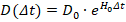
Nessa formulação, (D) é a distância aparente medida por um observador terrestre, (D_0) é a distância comóvel e (\Delta t) é o intervalo de tempo transcorrido desde a emissão do fóton até sua recepção.
A segunda proposição é que o redshift pode ser interpretado como efeito acumulado da contração local dos padrões de medida. O artigo sobre distância em função do redshift deriva a relação:
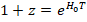
e, a partir dela:
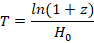
Como (T=D/c), a distância propria em função do redshift é apresentada como:
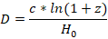
e a distância comovel ou aparente como:
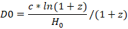
Essas expressões constituem uma das bases matemáticas da DUT para reinterpretar a relação entre redshift e distância cosmológica.
A terceira proposição é que massa e idade galáctica afetam o redshift. Nos anexos, a teoria prevê que, mantidas constantes distância e idade, galáxias mais massivas devem apresentar menor redshift, pois a maior intensidade gravitacional produziria maior contração e, portanto, menor comprimento de onda emitido. De modo semelhante, mantidas constantes massa e distância, galáxias mais antigas devem apresentar menor redshift, pois teriam acumulado mais tempo de contração gravitacional.
A quarta proposição é que efeitos atribuídos à matéria escura poderiam ser reinterpretados como efeitos de contração gravitacional diferencial. Segundo os documentos, estrelas em regiões mais afastadas do centro galáctico estão submetidas a campos gravitacionais menos intensos, o que produziria menor contração e maior comprimento de onda relativo. Esse efeito seria medido como maior redshift e interpretado, no modelo convencional, como maior velocidade orbital.
3. Metodologia
A metodologia adotada nos documentos pode ser reconstruída em três níveis: teórico-dedutivo, matemático e observacional.
3.1. Procedimento teórico-dedutivo
O primeiro nível consiste em tomar como ponto de partida a hipótese única da contração gravitacional contínua. A partir dela, os documentos procuram deduzir fenômenos diferentes: a Lei de Hubble, a relação distância-redshift, a dilatação temporal cosmológica, curvas de rotação galáctica, a relação Tully-Fisher e correlações entre massa, idade e redshift. Essa estratégia busca mostrar que uma única premissa poderia explicar fenômenos usualmente atribuídos a mecanismos distintos.
3.2. Procedimento matemático
O segundo nível consiste na formalização por meio de funções exponenciais. A contração é modelada por fatores do tipo:
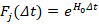
ou, em formulações mais gerais, por fatores dependentes da massa (M), da distância radial (R) e do tempo de contração. No artigo sobre a relação Tully-Fisher, por exemplo, a contração é generalizada com a hipótese adicional de que o tempo de contração é inversamente proporcional à intensidade do campo gravitacional. A partir dessa hipótese, introduz-se um fator dependente de (M/R^2).
O artigo sobre dilatação temporal aplica raciocínio semelhante às unidades de tempo. Se a unidade de distância em um referencial próprio contrai-se como:
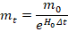
então a unidade de tempo também é alterada. A partir da definição física do segundo e da comparação entre referenciais comóvel e próprio, o documento deriva:
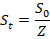
e, para a medida numérica do tempo:
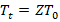
Essa relação é utilizada para explicar a dilatação temporal cosmológica observada em supernovas Tipo Ia.
3.3. Procedimento observacional
O terceiro nível é observacional. Os documentos apresentam três tipos principais de teste.
O primeiro teste compara pares de galáxias com distância aproximada semelhante, massa diferente e redshift superior a 0,01. A predição é simples: à mesma distância, a galáxia mais massiva deve apresentar menor redshift. O documento informa que 47 de 50 pares, ou 94%, obedecem a essa condição.
O segundo teste usa morfologia galáctica como aproximação da idade. Galáxias elípticas e lenticulares são tratadas como populações mais antigas; galáxias espirais, como populações mais jovens. Em aglomerados como Virgo, Coma e Centaurus, os documentos apresentam diferenças médias de redshift nas quais galáxias elípticas/lenticulares exibem redshift menor do que galáxias espirais.
O terceiro teste procura isolar variáveis em subgrupos do Aglomerado de Coma. A amostra é restrita a 20 galáxias elípticas/lenticulares, com o objetivo de manter aproximadamente constantes distância e idade. Em seguida, o conjunto é dividido em subgrupos com variação de redshift de cerca de 150 km/s, buscando reduzir o efeito de velocidades peculiares. A predição da DUT é uma correlação negativa entre massa estelar e redshift observado.
4. Modelo teórico e
cálculos principais
4.1. Distância, redshift e
tempo de viagem do fóton
O modelo parte da relação:
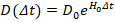
Essa equação expressa a ideia de que a distância aparente aumenta porque o padrão local de medida diminui. Aplicada ao comprimento de onda, a mesma lógica conduz a:
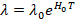
A definição de redshift é:
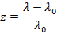
Logo:
e:
Como (D=cT), obtém-se:
Essa equação é apresentada como fórmula direta da distância comóvel em função do redshift. A distância aparente, por sua vez, é dada por:
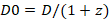
portanto:
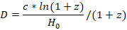
O ponto central é que, na DUT, o redshift não é tratado apenas como efeito de expansão espacial, mas como consequência da diferença entre padrões de medida contraídos e fótons que atravessam regiões de gravidade desprezível durante longos intervalos de tempo.
4.2. Dilatação temporal cosmológica
A aplicação temporal da DUT parte da ideia de que a definição física do segundo depende de padrões atômicos, e esses padrões também seriam afetados pela contração gravitacional. O documento sobre supernovas Tipo Ia distingue entre tempo comóvel (S_0) e tempo próprio (S_t). Se o fator de contração é:
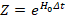
então a unidade temporal própria é:
Consequentemente, a medida numérica de uma duração física em referencial próprio torna-se:
Essa equação é usada para interpretar a dilatação temporal cosmológica das supernovas Tipo Ia. O artigo afirma que a duração observada das explosões SN1A cresce pelo fator associado a (1+z), o que seria compatível com a previsão da DUT.
4.3. Massa, idade e redshift
Nos documentos, o redshift depende de pelo menos três fatores: distância, massa e idade. A distância aumenta o redshift porque amplia o tempo de viagem do fóton; a massa reduz o redshift quando a galáxia emissora é mais massiva, pois maior gravidade implicaria maior contração e menor comprimento de onda emitido; a idade reduz o redshift porque galáxias mais antigas teriam acumulado mais contração ao longo do tempo.
Essa proposição conduz a duas predições observacionais:
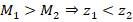
quando as galáxias estão à mesma distância e possuem idade comparável; e:
quando massa e distância são aproximadamente controladas.
Nos pares galácticos apresentados nos anexos, 47 de 50 casos são classificados como favoráveis à predição “maior massa, menor redshift”.
No teste por morfologia, as médias apresentadas são:
|
Aglomerado |
Tipo antigo — E/S0 |
Tipo jovem — Espiral |
Diferença |
|
Virgo |
950 km/s |
1450 km/s |
+500 km/s |
|
Coma |
6900 km/s |
7100 km/s |
+200 km/s |
|
Centaurus |
3000 km/s |
3500 km/s |
+500 km/s |
A interpretação proposta é que galáxias elípticas/lenticulares, por serem mais antigas, teriam acumulado maior contração e, por isso, exibiriam menor redshift médio. O próprio documento reconhece, porém, que o modelo ΛCDM oferece uma explicação alternativa baseada em segregação morfológica e velocidades peculiares em aglomerados.
4.4. Curvas de rotação galáctica
Para explicar curvas de rotação sem matéria escura, os documentos propõem que estrelas em diferentes regiões de uma galáxia emitem fótons submetidos a diferentes histórias de contração. A velocidade orbital newtoniana é expressa por:
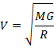
mas a velocidade aparente medida na Terra incluiria também um fator de contração diferencial. A equação geral apresentada para a curva de rotação aparente é:
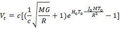
Nessa expressão, (c) é a velocidade da luz, (M) é a massa da galáxia emissora, (G) é a constante gravitacional, (R) é a distância da estrela ao centro galáctico, (H_0) é a constante de Hubble, (T_0) é o tempo de contração e (J_0) é a constante jocaxiana. O documento aplica essa equação à galáxia Messier 33 e afirma que a curva obtida reproduz o comportamento tradicionalmente atribuído à matéria escura.
4.5. Relação Tully-Fisher
O artigo sobre a relação Tully-Fisher parte da relação empírica:
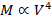
Segundo o documento, a DUT permite derivar essa relação a partir da equação de rotação galáctica e de duas aproximações astrofísicas para galáxias espirais: razão massa-luminosidade aproximadamente constante e brilho superficial central aproximadamente uniforme, associado à Lei de Freeman.
Assumindo que a massa de uma galáxia espiral é proporcional à área de seu disco:
tem-se:
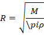
Substituindo essa relação na forma newtoniana da velocidade:
obtém-se, em termos proporcionais:
logo:
O documento conclui que a relação Tully-Fisher poderia ser derivada sem recorrer à matéria escura, desde que aceitas as aproximações sobre densidade superficial e razão massa-luminosidade para galáxias espirais.
5. Resultados e
discussão
Os resultados apresentados nos documentos podem ser agrupados em quatro conjuntos.
O primeiro conjunto diz respeito à relação distância-redshift. A DUT propõe fórmulas diretas para distância comóvel e distância aparente em função do redshift. A força dessa formulação está na simplicidade matemática: a relação depende de (c), (H_0) e (\ln(1+z)). A limitação está no fato de que o próprio documento reconhece que a fórmula seria mais adequada para galáxias de massa semelhante à Via Láctea, podendo ser prejudicada quando aplicada a galáxias muito mais massivas ou menos massivas.
O segundo conjunto diz respeito à dilatação temporal cosmológica. A teoria deriva a relação (T_t=ZT_0), aplicando-a à duração observada de supernovas Tipo Ia. O argumento é coerente com a lógica interna da DUT, pois tempo e espaço são tratados como padrões físicos igualmente afetados pela contração gravitacional. Entretanto, a demonstração exige comparação quantitativa mais ampla com bases observacionais independentes de curvas de luz SN1A.
O terceiro conjunto refere-se à massa e idade galáctica como fatores de redshift. Os testes apresentados são favoráveis à DUT em alguns casos: 47 de 50 pares de galáxias obedecem à condição “maior massa, menor redshift”; galáxias elípticas/lenticulares exibem menor redshift médio do que espirais em Virgo, Coma e Centaurus; e subgrupos do Aglomerado de Coma apresentam correlações negativas entre massa estelar e redshift em dois dos quatro grupos analisados.
O quarto conjunto refere-se à dinâmica galáctica. A DUT propõe que curvas de rotação e a relação Tully-Fisher podem ser derivadas sem matéria escura. A equação aplicada a Messier 33 e a dedução de (M\propto V^4) constituem tentativas de mostrar que a teoria reproduz regularidades empíricas importantes. A principal limitação é que essas derivações dependem de hipóteses auxiliares — especialmente sobre densidade superficial, razão massa-luminosidade e formação simultânea das galáxias — que precisam ser testadas em amostras mais amplas.
O teste mais metodologicamente cuidadoso é o dos subgrupos de Coma. Nele, os documentos procuram controlar distância, idade e velocidade radial. Os resultados, porém, são mistos: o subgrupo 2 apresenta correlação de -0,8477; o subgrupo 4 apresenta correlação de -0,6789; mas o subgrupo 1 apresenta correlação positiva perfeita, embora com apenas duas galáxias, e o subgrupo 3 apresenta correlação positiva fraca. O próprio documento reconhece que a ausência de correlação negativa universal indica que o efeito proposto pela DUT não é o único fator envolvido.
As limitações explicitadas são relevantes: subgrupos pequenos, uso de massa estelar como aproximação da massa total, possíveis efeitos de projeção e diferenças de profundidade dentro do aglomerado. Por essa razão, a conclusão mais adequada não é que a DUT tenha sido confirmada, mas que seus resultados preliminares justificam investigação adicional e formalização matemática mais robusta.
6. Conclusão
Com base nos documentos analisados, a Decreasing Universe Theory pode ser formulada como um programa teórico baseado em uma hipótese central: a gravidade produz contração contínua do espaço, da matéria e dos padrões locais de medida. A partir dessa hipótese, os textos constroem explicações alternativas para redshift cosmológico, distância aparente, dilatação temporal, curvas de rotação galáctica, relação Tully-Fisher e correlações entre massa, idade e redshift.
A contribuição principal da DUT está em sua ambição unificadora. Em vez de recorrer separadamente a energia escura, matéria escura, expansão acelerada e efeitos dinâmicos locais, a teoria procura derivar múltiplos fenômenos de uma única premissa. Suas equações fundamentais — especialmente (D=D_0e^{H_0\Delta t}), (1+z=e^{H_0T}), (D=c\ln(1+z)/H_0) e (T_t=Z*T_0) — organizam matematicamente essa proposta.
Os dados apresentados nos anexos são compatíveis com algumas predições da teoria: galáxias mais massivas aparecem, em vários pares, com menor redshift; galáxias morfologicamente mais antigas apresentam menor redshift médio em alguns aglomerados; e subgrupos de Coma exibem correlações negativas entre massa e redshift quando certas variáveis são controladas. Além disso, os documentos propõem uma equação para curvas de rotação e uma derivação da relação Tully-Fisher.
Entretanto, a validade científica da DUT ainda depende de avanços importantes. É necessário formalizar de maneira mais completa a relação entre campo gravitacional, massa, tempo de exposição e contração. Também é indispensável testar as predições em catálogos astronômicos independentes, com amostras maiores, estimativas homogêneas de massa total, controle estatístico de velocidades peculiares e comparação quantitativa direta com o modelo ΛCDM.
Assim, a conclusão mais equilibrada é que a DUT, conforme os documentos anexados, constitui uma hipótese cosmológica alternativa coerente em sua formulação interna e dotada de predições testáveis, mas ainda não suficientemente demonstrada para substituir o modelo cosmológico padrão. Seu valor acadêmico imediato está em propor uma agenda de pesquisa: transformar a hipótese da contração gravitacional contínua em um modelo matemático plenamente especificado e submetê-lo a testes observacionais independentes, replicáveis e estatisticamente robustos.
Referências
[01] Derivation of Hubble's Law and its relation to dark energy
and dark matter
https://medcraveonline.com/OAJMTP/OAJMTP-02-00049.pdf
[02] Decreasing universe: the distance
as a function of redshift (new)
https://jocaxx.github.io/DUniverse/Todos/No_Dark_Energy.pdf
[03] Decreasing Universe: Redshifts and Distance Data
Refute the L-CDM Model
https://www.wecmelive.com/open-access/decreasing-universe-redshifts-and-distance-data-refute-the-lcdmmodel.pdf
[04] Observational Evidence
of Intrinsic Differential Redshifts in Galaxy Pairs: A Test of the Decreasing Universe Theory (DUT) https://jocaxx.github.io/DUniverse/Todos/DUT_GAL_Eng.pdf
[05] Decreasing universe: the ‘Dark Matter’ effect
https://www.medcrave.com/articles/det/29521/Decreasing-universe-the-Dark-Mattereffect
[06] Decreasing Universe Theory: The Tully-Fisher Relation
https://philarchive.org/rec/BARDUT-3
[07] Decreasing universe: the CMB and the
age of the universe
http://medcraveonline.com/PAIJ/PAIJ-09-00372.pdf
[08] Decreasing Universe Theory:
Galaxies without Dark Matter (NGC 1052-DF2, DF4, and
DF9)
https://jocaxx.github.io/DUniverse/Todos/DUT_NGC1052_ENG.pdf
[09] Decreasing Universe: AI Analysis
of Article Data Disproves L-CDM Model
https://philpapers.org/rec/BARDUT-2
[10] What if the Universe Is NOT Expanding?
https://insertphilosophyhere.com/what-if-the-universe-is-not-expanding/
[11] The instability of critical and
underdense Friedmann spacetimes
at the Big Bang as an alternative
to dark energy
https://royalsocietypublishing.org/rspa/article/482/2338/20250912/481920/The-instability-of-critical-and-underdense
[12] Jocaxian Nothingness
https://medcraveonline.com/AAOAJ/the-jocaxianrsquos-nothingness.html
[13] Dark energy 'doesn't exist' so can't be
pushing 'lumpy' universe apart, physicists say
https://phys.org/news/2024-12-dark-energy-doesnt-lumpy-universe.html
[14]Decreasing
Universe Theory: Dark
Matter X Gravitational Gradient
https://vixra.org/abs/2607.0108
[15] Decreasing Universe
Theory: Main Articles
https://jocaxx.github.io/DUniverse/Articles.pdf